整列
- 描画した「長方形」「楕円形」を整列することで、オブジェクトとして意味付けをする
- 「ウィンドウ」メニュー → 「整列」
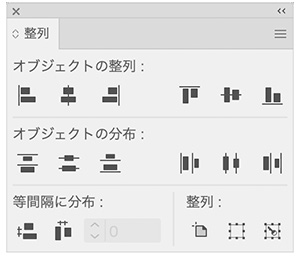
長方形を移動コピー（Altキー）
- 「選択ツール」で「Altキー」を押しながら移動

移動コピーを繰り返す
- 通常は、ショートカットキー「Ctrl ＋ D」を使う
- 「duplicate」：複製


範囲の中で揃える
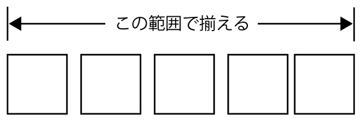
等間隔に揃える
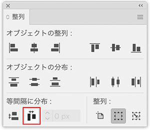
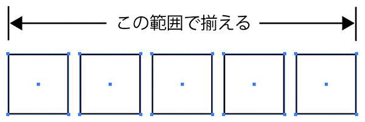
同心円に揃える
- 徐々に小さくなる円を描く
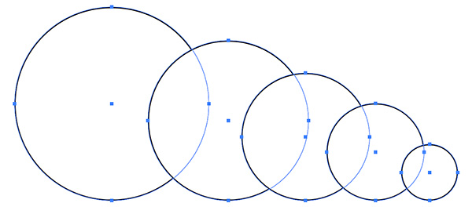
- 中央に揃える
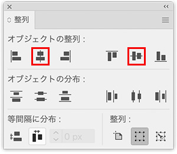
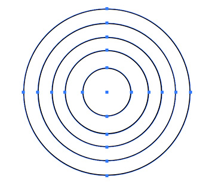
キーオブジェクトに整列
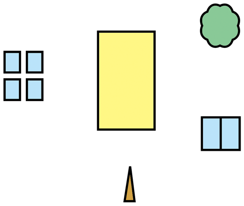
- 揃えたいオブジェクトを選択する
- 基準にする動かしたくないオブジェクトをクリックする（キーオブジェクトを指定）
- 整列パレットで、左右中央と下揃えのアイコンをクリック
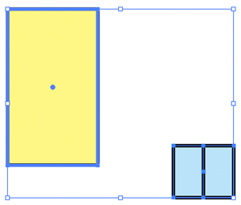
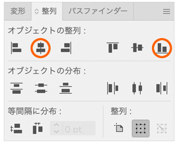
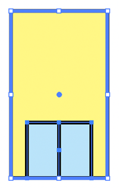
- 同様に、ビルと窓を選択して整列パレットで揃える
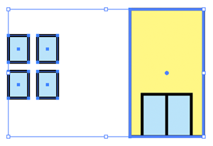
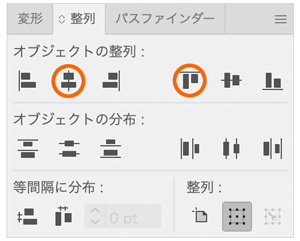
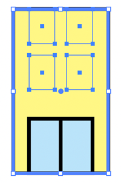
- 選択解除後
- 黄色いビルのみを選択する
- [オブジェクト]メニュー → 重ね順 → 「最背面へ」
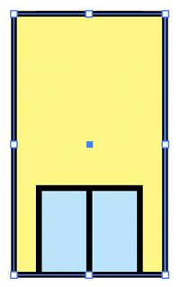
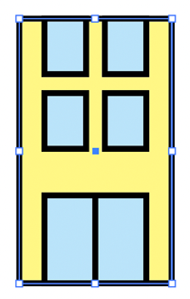
- 窓オブジェクトのみを選択して、矢印キーで下に移動させる
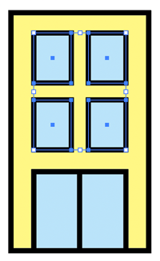
- 街路樹は、バランスを整えて配置する
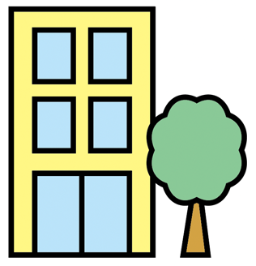